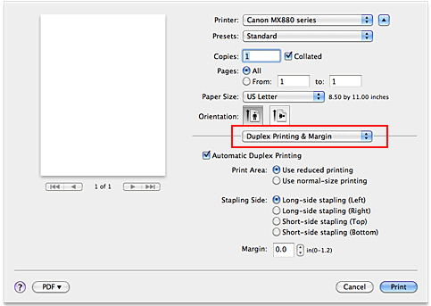

The procedure for printing data on both sides of a sheet of paper is as follows:
-
Select Duplex Printing & Margin from the pop-up menu on the Print Dialog
 -
Set duplex printing
Check the Automatic Duplex Printing check box.
-
Set the print area
When you perform duplex printing, the print area of the document becomes slightly narrower than usual and the document may not fit on one page.
If necessary, select one of the processing methods from Print Area. -
Set the stapling margin
To change the Stapling Side, select a setting from the list, and if necessary, set the Margin width.
-
Complete the setup
Click Print.
When you execute print, duplex printing will be started.
 Important
Important
-
When a media type other than Plain Paper, Hagaki A or Hagaki is selected from Media Type menu of Quality & Media, Automatic Duplex Printing appears grayed out and is unavailable.
-
When Borderless Printing is set, Automatic Duplex Printing appears grayed out and is unavailable.
-
Automatic Duplex Printing can be performed only when one of the following paper sizes is selected from Paper Size.
-
US Letter, A5, A4, B5 JIS (JB5), Hagaki
-
-
After printing the front page, there is an ink drying wait time before starting to print the back page (Operation stops temporarily). Do not touch the paper during the time. You can change the ink drying wait time from Custom Settings in the Canon IJ Printer Utility.
-
When you perform the automatic duplex printing for Hagaki, print an address first and then print your message.
 Note
Note
-
When performing the automatic duplex printing, do not use any plain paper smaller than A5.
-
If the back side of the paper becomes smudged during duplex printing, perform Bottom Plate Cleaning from the Canon IJ Printer Utility.